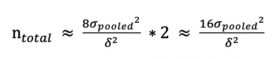
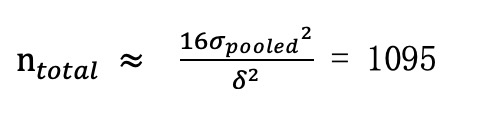
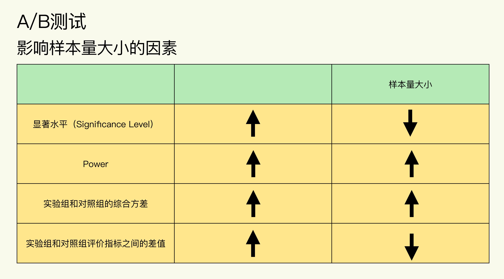

- 00 开篇词 用好A_B测试，你得这么学.md.html
- 01 统计基础（上）：系统掌握指标的统计属性.md.html
- 02 统计基础（下）：深入理解A_B测试中的假设检验.md.html
- 04 确定指标：指标这么多，到底如何来选择？.md.html
- 05 选取实验单位：什么样的实验单位是合适的？.md.html
- 06 选择实验样本量：样本量越多越好吗？.md.html
- 07 分析测试结果：你得到的测试结果真的靠谱吗？.md.html
- 08 案例串讲：从0开始，搭建一个规范的A_B测试框架.md.html
- 09 测试结果不显著，要怎么改善？.md.html
- 10 常见误区及解决方法（上）：多重检验问题和学习效应.md.html
- 11 常见误区及解决方法（下）：辛普森悖论和实验组_对照组的独立性.md.html
- 12 什么情况下不适合做A_B测试？.md.html
- 13 融会贯通：A_B测试面试必知必会（上）.md.html
- 14 举一反三：A_B测试面试必知必会（下）.md.html
- 15 用R_Shiny，教你制作一个样本量计算器.md.html
- 加餐 试验意识改变决策模式，推动业务增长.md.html
- 导读 科学、规范的A_B测试流程，是什么样的？.md.html
- 结束语 实践是检验真理的唯一标准.md.html
- 捐赠
06 选择实验样本量：样本量越多越好吗？
你好，我是博伟。
前面聊了很多A/B测试的准备工作，我们确定了目标和指标，也选取了实验单位，那么，现在可以正式开始测试了吗?
先别着急，我们还需要解决正式测试前的最后一个问题：到底多少样本量是合适的呢？
打破误区：样本量并不是越多越好
如果我问你，做A/B测试时多少样本量合适，你的第一反应肯定是，那当然是越多越好啊。样本量越多，实验结果才会越准确嘛！
从统计理论上来说，确实是这样。因为样本量越大，样本所具有的代表性才越强。但在实际业务中，样本量其实是越少越好。
为什么会这样说呢？我来带你分析一下。
要弄明白这个问题，你首先要知道A/B需要做多长时间，我给你一个公式：A/B测试所需的时间 = 总样本量 / 每天可以得到的样本量。
你看，从公式就能看出来，样本量越小，意味着实验所进行的时间越短。在实际业务场景中，时间往往是最宝贵的资源，毕竟，快速迭代贵在一个“快”字。
另外，我们做A/B测试的目的，就是为了验证某种改变是否可以提升产品、业务，当然也可能出现某种改变会对产品、业务造成损害的情况，所以这就有一定的试错成本。那么，实验范围越小，样本量越小，试错成本就会越低。
你看，实践和理论上对样本量的需求，其实是一对矛盾。所以，我们就要在统计理论和实际业务场景这两者中间做一个平衡：在A/B测试中，既要保证样本量足够大，又要把实验控制在尽可能短的时间内。
那么，样本量到底该怎么确定呢？
你可能会说，网上有很多计算样本量的网站，我用这些网站来计算出合适的样本量，难道不可以吗？这当然也是一种方法，但你有没有想过，这些网上的计算器真的适用于所有的A/B测试吗？如果不适用的话，应该怎么计算呢？
事实上，我们只有掌握了样本量计算背后的原理，才能正确地计算出样本量。
所以，这节课，我会先带你熟悉统计学上的理论基础，再带你进行实际的计算，让你学会计算不同评价指标类型所需的样本量大小。最后，我再通过一个案例来给你串讲下，帮助你掌握今天的内容。
样本量计算背后的原理
这里咱们开门见山，我先把样本量的计算公式贴出来，然后再来详细讲解：
\[- \\mathrm{n}=\\frac{\\left(Z\_{1-\\frac{\\alpha}{2}}+Z\_{1-\\beta}\\right)^{2}}{\\left(\\frac{\\delta}{\\sigma\_{\\text {pooled}}}\\right)^{2}}=\\frac{\\left(Z\_{1-\\frac{\\alpha}{2}}+Z\_{\\text {power}}\\right)^{2}}{\\left(\\frac{\\delta}{\\sigma\_{\\text {pooled}}}\\right)^{2}}- \]
其中：
\(Z\_{1-\\frac{\\alpha}{2}}\) 为 \(\\left(1-\\frac{\\alpha}{2}\\right)\) 对应的 \(Z\) Score。 \(Z\_{\\text {Power}}\) 为 Power 对应的 Z Score。- \(\\delta\) 为实验组和对照组评价指标的差值。- \(\\sigma\_{\\text {pooled}}^{2}\) 为实验组和对照组的综合方差（Pooled Variance）。
从公式中，我们可以看出来，样本量主要由α、Power、δ和\(\\sigma\_{\\text {pooled}}^{2}\)决定。我们要调整样本量的大小就靠这4个因素了，下面我们就来具体聊聊每个因素怎样影响样本量n的。
这四个因素里，α、δ和 \(\\sigma\_{\\text {pooled}}^{2}\)我在前几节课已经讲过了，所以在聊每个因素是如何影响样本量n这个问题之前，我先来给你介绍下Power到底是什么。
如何理解Power?
Power，又被称作Statistical Power。在第二节讲统计基础时，我讲解过第二类错误率β（Type II Error）。在统计理论中，Power = 1–β。
Power的本质是概率，在A/B测试中，如果实验组和对照组的指标事实上是不同的，Power指的就是通过A/B测试探测到两者不同的概率。
可能这么说还是有些抽象，不过没关系，Power确实是比较难理解的统计概念，我刚开始接触时也是一头雾水。所以，我再举个例子来帮助你理解Power。
某社交App的用户注册率偏低，产品经理想要通过优化用户注册流程来提高用户注册率。用户注册率在这里的定义是：完成注册的用户的总数 / 开始注册的用户的总数 * 100%
那么，现在我们就可以用A/B测试来验证这种优化是否真的能提高用户注册率。
我们先把用户分为对照组和实验组，其中：
- 对照组是正常的用户注册流程，输入个人基本信息——短信/邮箱验证——注册成功。
- 实验组是，在正常的用户注册流程中，还加入了微信、微博等第三方账号登录的功能，用户可以通过第三方账号一键注册登录。
相信不用我说，你也能猜到，实验组用户的注册率肯定比对照组的要高，因为实验组帮用户省去了繁琐的注册操作。这就说明，在事实上这两组用户的注册率是不同的。
那么，现在如果A/B测试有80%的Power，就意味着这个A/B测试有80%的概率可以准确地检测到这两组用户注册率的不同，得出统计显著的结果。换句话说，这个A/B测试有20%的概率会错误地认为这两组用户的注册率是相同的。
可见，Power越大，说明A/B测试越能够准确地检测出实验组与对照组的不同（如果两组事实上是不同的）。
我再给你打个比方。你可以把A/B测试看作是探测空中飞行物的雷达。那么专门探测小型无人机的雷达的灵敏度，就要比专门探测大型客机的雷达的灵敏度高。因为探测物越小，就越需要灵敏度更高的雷达。在这里，雷达的灵敏度就相当于A/B测试的Power，Power越大，就越能探测到两组的不同。
所以啊，你把Power看成A/B测试的灵敏度就可以了。
四个因素和样本量n的关系
认识完Power，那现在就让我们来看下α、Power、δ和\(\\sigma\_{\\text {pooled}}^{2}\)这四个因素和样本量n的关系。
1.显著水平（Significance Level）α
显著水平和样本量成反比：显著水平越小，样本量就越大。这个也不难理解。因为显著水平又被称为第一类错误率（Type I Error）α，想要第一类错误率越小，结果越精确，就需要更大的样本量。
2.Power （1 – β）
Power和样本量成正比：Power越大，样本量就越大。Power越大，就说明第二类错误率（Type II Error）β越小。和第一类错误类似，想要第二类错误率越小，结果越精确，就需要更大的样本量。
3.实验组和对照组的综合方差\(\\sigma\_{\\text {pooled}}^{2}\)
方差和样本量成正比：方差越大，样本量就越大。
前面讲过，方差是用来表征评价指标的波动性的，方差越大，说明评价指标的波动范围越大，也越不稳定，那就更需要更多的样本来进行实验，从而得到准确的结果。
4.实验组和对照组评价指标的差值δ
差值和样本量成反比：差值越小，样本量就越大。因为实验组和对照组评价指标的差值越小，越不容易被A/B测试检测到，所以我们需要提高Power，也就是说需要更多的样本量来保证准确度。
实践中该怎么计算样本量？
在实践中，绝大部分的A/B测试都会遵循统计中的惯例：把显著水平设置为默认的5%，把Power设置为默认的80%。这样的话我们就确定了公式中的Z分数，而且四个因素也确定了两个（α、Power）。那么，样本量大小就主要取决于剩下的两个因素：实验组和对照组的综合方差\(\\sigma\_{\\text {pooled}}^{2}\)，以及两组评价指标的差值δ。因此样本量计算的公式可以简化为：- $\(- \\mathrm{n} \\approx \\frac{8 \\sigma\_{p o o l e d}^{2}}{\\delta^{2}}- \)$
现在，我们就可以用这个简化版的公式来估算样本量大小了。
其中，方差是数据本身的属性（代表了数据的波动性），而两组间评价指标的差值则和A/B测试中的变量，以及变量对评价指标的影响有关。
以上公式其实是在两组评价指标的综合方差为 \(\\sigma\_{\\text {pooled}}^{2}\)，两组评价指标的差值为δ的情况下，要使A/B测试结果达到统计显著性的最小样本量。
注意，这里重点强调“最小”二字。理论上样本量越大越好，上不封顶，但实践中样本量越小越好，那我们就需要在这两者间找一个平衡。所以由公式计算得到的样本量，其实是平衡二者后的最优样本量。
样本量计算出来了，接下来就要分对照组和实验组了，那这里就涉及到一个问题，实验组和对照组的样本量应该如何分配？在这个问题中，其实存在一个很常见的误解。那么接下来，我就带你来好好分析一下样本量分配这个问题。
实验组和对照组的样本量应保持相等
如果A/B测试的实验组和对照组样本量相等，即为50%/50%均分，那么我们的总样本量（实验组样本量和对照组样本量之和）为：- 
你可能会问，实验组和对照组的样本量必须要相等吗？
虽然两组的样本量不相等在理论上是可行的，实践中也可以如此操作，但是我强烈不建议你这样做。下面听我来仔细分析。
一个常见的误解是，如果实验组的样本量大一些，对照组的样本量小一些（比如按照80%/20%分配），就能更快地获得统计上显著的结果。其实现实正好相反：两组不均分的话反而会延长测试的时间。
为什么会这样呢？因为我们计算的达到统计显著性的最小样本量，是以每组为单位的，并不是以总体为单位。也就是说，在非均分的情况下，只有相对较小组的样本量达到最小样本量，实验结果才有可能显著，并不是说实验组越大越好，因为瓶颈是在样本量较小的对照组上。
相对于50%/50%的均分，非均分会出现两种结果，这两种结果均对业务不利。
- 准确度降低。如果保持相同的测试时间不变，那么对照组样本量就会变小，测试的Power也会变小，测试结果的准确度就会降低；
- 延长测试时间。如果保持对照组的样本量不变，那么就需要通过延长测试时间来收集更多的样本。
所以只有两组均分，才能使两组的样本量均达到最大，并且使总样本量发挥最大使用效率，从而保证A/B测试更快更准确地进行。
你可能会问，这个样本量的估算是在A/B测试前进行的，但我还没有做这个实验，怎么知道两组间评价指标的差值δ呢？
估算实验组和对照组评价指标的差值δ
这里呢，我们当然不会事先知道实验结束后的结果，不过可以通过下面的两种方法估算出两组评价指标的差值δ。
第一种方法是从收益和成本的角度进行估算。
业务/产品上的任何变化都会产生相应的成本，包括但不限于人力成本、时间成本、维护成本、机会成本，那么变化带来的总收益能否抵消掉成本，达到净收益为正呢？
举个例子，我们现在想要通过优化注册流程来增加某App的用户注册率。假设优化流程的成本大约是3万元（主要是人力和时间成本），优化前的注册率为60%，每天开始注册的人数为100人，每个新用户平均花费10元。如果优化后的注册率提升为70%，这样一年下来就多了3.65万元（（70%-60%）*100*10*365）的收入，这样的话一年之内的净收益就为正的，这就说明此次优化流程不仅回本，而且还带来了利润，也就证明10%的差值是一个理想的提升。
当然，我们进行相应的改变肯定是希望获得净收益，所以一般我们会算出当收支平衡时差值为 \(\\delta\_{\\text {收支平衡}}\)，我们希望差值\(\\delta \\geq \\delta\_{\\text {收支平衡 }}\)。在这个例子中， \(\\delta\_{\\text {收支平衡}}\)= 8.2% (30000/10/100/365)，所以我们希望的差值δ至少为8.2%。
第二种方法是，如果收益和成本不好估算的话，我们可以从历史数据中寻找蛛丝马迹，根据我在第4节课介绍的计算指标波动性的方法，算出这些评价指标的平均值和波动范围，从而估算一个大概的差值。
比如说我们的评价指标是点击率，通过历史数据算出点击率的平均值为5%，波动范围是[3.5%, 6.5%]，那么我们对实验组评价指标的期望值就是至少要大于这个波动范围，比如7%，那么这时δ就等于2%（7%–5%）。
计算实验组和对照组的综合方差\(\\sigma\_{\\text {pooled}}^{2}\)
至于两组综合方差\(\\sigma\_{\\text {pooled}}^{2}\)的计算，主要是选取历史数据，根据不同的评价指标的类型，来选择相应的统计方法进行计算。评价指标的类型主要分为概率类和均值类这两种。
概率类指标在统计上通常是二项分布，综合方差为：- $\(- \\sigma\_{\\text {pooled}}^{2}=p\_{\\text {test}}\\left(1-p\_{\\text {test}}\\right)+p\_{\\text {control}}\\left(1-p\_{\\text {control}}\\right)- \)$
其中，\(p\_{\\text {control}}\)为对照组中事件发生的概率，也就是没有A/B测试变化的情况，一般可以通过历史数据计算得出；\(p\_{\\text {test}}=p\_{\\text {control}}+\\delta\)，得出的是期望的实验组中事件发生的概率。
均值类指标通常是正态分布，在样本量大的情况下，根据中心极限定理，综合方差为：- $\(- \\sigma\_{p o o l e d}^{2}=\\frac{2 \* \\sum\_{i}^{n}\\left(x\_{i}-\\bar{x}\\right)^{2}}{n-1}- \)$- 其中：
- n为所取历史数据样本的大小。
- \(x\_{i}\)为所取历史数据样本中第i个用户的使用时长/购买金额等。
- \(\\bar{x}\)为所取历史数据样本中用户的平均使用时长/购买金额等。
好了，到这里，这节课的核心内容就全部讲完了。不过为了帮助你更好地掌握这些公式原理和计算方式，现在我就用优化注册流程来增加用户注册率的这个例子，来给你串一下该怎么计算样本大小。
案例串讲
我们可以根据前面介绍总样本量的公式来计算样本量：
首先，我们来计算实验组和对照组之间评价指标的差值δ。在前面某App优化用户注册率的案例中，可以看到，我们从成本和收益的角度估算出\(\\delta\_{\\text {收支平衡}}\)=8.2%。
其次，我们来计算\(\\sigma\_{\\text {pooled}}^{2}\)。根据历史数据我们算出注册率大约为60%（\(p\_{\\text {control}}\)），结合前面算出的\(\\delta\_{\\text {收支平衡}}\)=8.2%，这时就可以把流程改变后的注册率定为68.2%， 然后再根据概率类指标的计算公式求出\(\\sigma\_{\\text {pooled}}^{2}\) = 60%*(1-60%) + 68.2%*(1-68.2%)=0.46。
最后，我们在A/B测试中把实验组和对照组进行50%/50%均分，利用公式最终求得样本总量为：

这样我们就求得每组样本量至少要有548，完成了样本量的计算。
还记得开头我提到的网上各种各样的A/B测试的样本量计算器吗？比如这款。如果你仔细研究这些计算器，就会发现这些计算器几乎全部是让你输入以下4个参数：
- 原始转化率 \(p\_{\\text {control}}\)（Baseline Conversion Rate）。
- 最小可检测提升δ（Minimum Detectable Lift）或者优化版本转化率\(p\_{\\text {test}}\) 。
- 置信水平 (1-α）（Confident Level）或者显著水平α（Significance Level）。
- Statistical Power（1-β）。
细心的你可能已经发现：上面这些参数都是计算概率类指标要用的参数，所以现在网上的这些样本量计算器只能计算概率类的指标，并不能计算均值类的指标，所以我们在使用时一定要注意要求输入的参数是什么，才能根据不同类型的指标选择正确的计算方法。对于均值类指标，现在网上还没有比较好的样本量计算器，在这种情况下我建议你通过公式来计算。
为了方便大家日后计算A/B测试中各类指标的样本量，我会在专栏的最后一节课，教大家用R做一个既可以计算概率类指标，还可以计算均值类指标的线上样本量计算器，敬请期待！
小结
这节课我们主要学习了怎么确定A/B测试所需的样本量大小，了解了背后的理论基础，我给你总结了影响样本量的四个因素，其中，向上箭头表示增大，向下箭头表示减小。

这里我想要再强调一下，这节课介绍的计算A/B测试样本量的方法，是测试前对样本量的估计值，是为了让A/B测试结果达到统计显著性的最小样本量，所以，只要最终的实际样本量大于最小样本量就行。当然如果业务条件允许的话，样本量自然是越多越好。
最后我想说的是，当我们用网上的A/B测试样本量计算器时，要注意输入的参数是什么，因为绝大部分的计算器都是让用户输入转化率，只能计算概率类的指标，所以当计算概率类指标时我们可以用网上的计算器，但如果是其他类的指标（如均值类）的话不能用网上的计算器，还是得靠你自己利用公式计算测试所需的最小样本量，或者跟着我在专栏的最后，一起做一个既包含概率类指标，又包含均值类指标的线上样本量计算器。
思考题
你有用过网上的A/B测试样本量计算器吗？有没有想过为什么网上大部分的样本量计算器只能算概率类的指标而不能计算均值类指标呢？
欢迎在评论区留言、讨论，也欢迎点击“请朋友读”，把今天的内容分享给你的同事、好友，和他一起学习、成长。好，感谢你的收听，我们下节课再见。
© 2019 - 2023 Liangliang Lee. Powered by gin and hexo-theme-book.